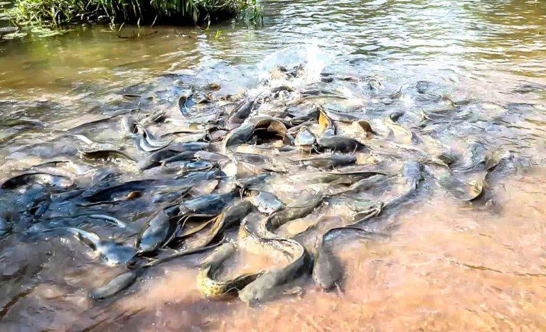

Galerie des sites touristiques de Bobo-Dioulasso
-
Grand Marché

-
Marché de fruits et légumes

-
Mausolée de Guimbi OUATTARA

-
Grande Mosquée de Dioulassoba

-
Musée communal Sogossira Sanon

-
Musée de la Musique

-
Maison de la Culture

-
Quartier historique de Dioulassoba

-
Marre au poisson sacré de Dafra

-
Village artisanal de koko